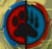
Royaume de Bérimond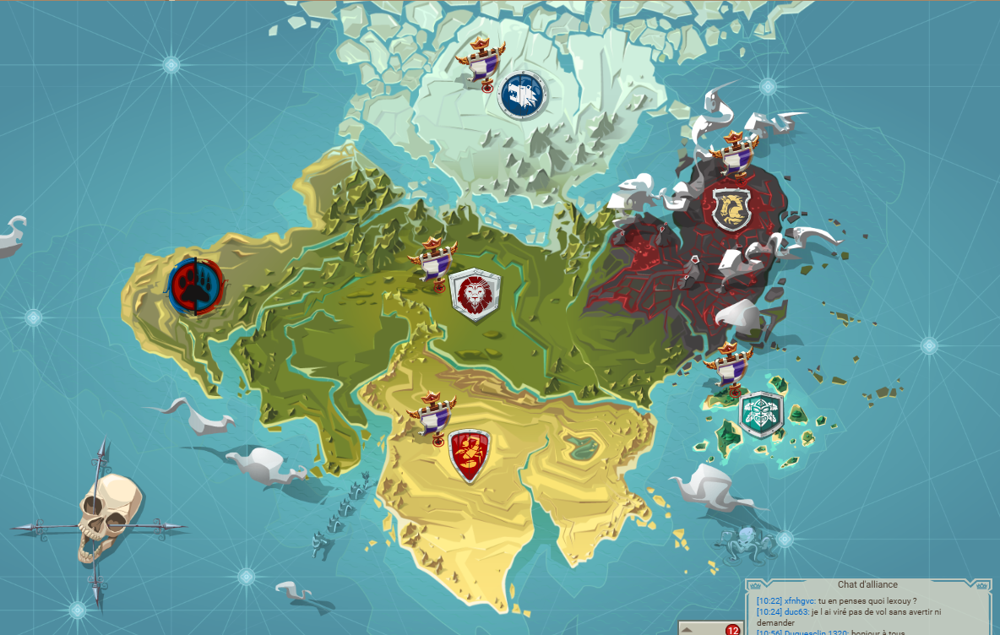
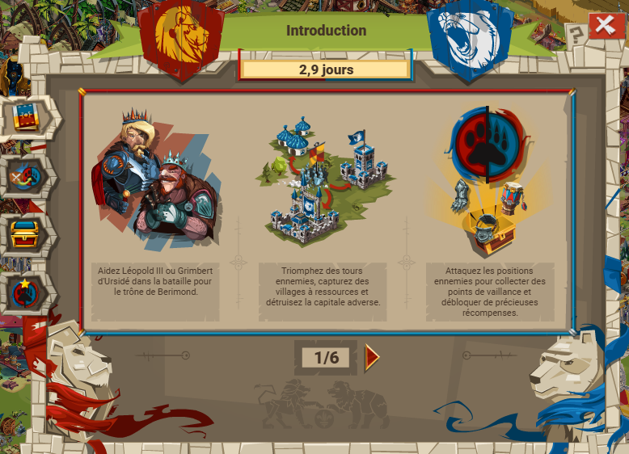
La battaile de Bérimond est un event de 3 jours environ qui oppose deux camps : Ursidé (ours) et Leopold III (lion). Cet event est composés de camps (appartenant à des joueurs) et des tour de guet-var et d'une capitale/camp (pnj).
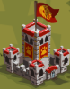
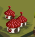
Le but de cet event est pour chaque camps de battre les tours de guet ennemies jusqu'à arriver à la capitale, et la détruire.
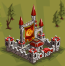
Attaquer un tour de guet permet de piller des ressources pour monter son camp, mais aussi des pièces, 10-15 ruru/attaque et SURTOUT des points de vaillance.
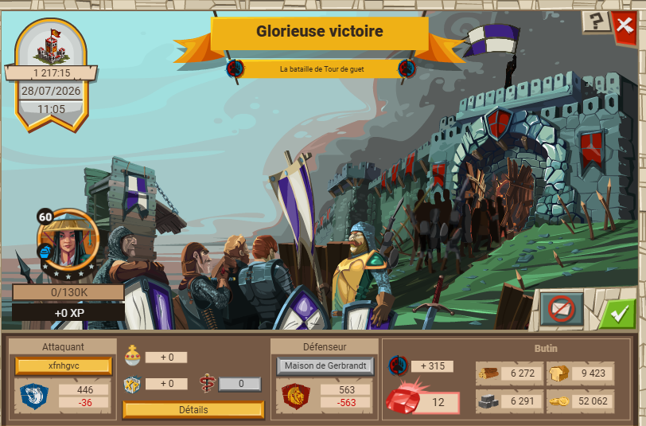
Comme pour les points de gloire, il existe des titre de vaillance, disponibles à partir d'un certain nombre de points de vaillance. Également comme pour les titres de gloire, franchir ces palliers occtroie des bonus.
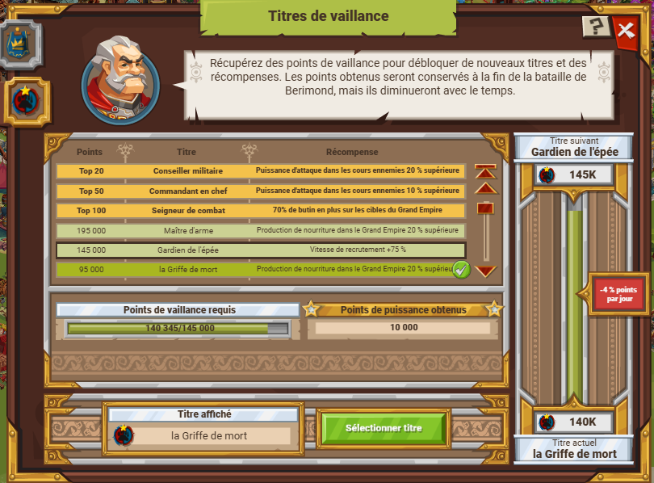
Il est possible d'envoyer des soso et engins dans ce royaume, mais pas de ressources. En plus des soso habituels, il y a les auxilliaires : ce sont des équivalent de soso qui peuvent être recrutés dans le terrain d'entraînement, ou en récompense de quêtes. La limite d'auxilliaires en nombre est liée au niveau du siègedes auxilliaires.
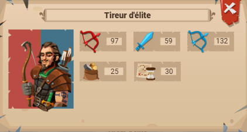
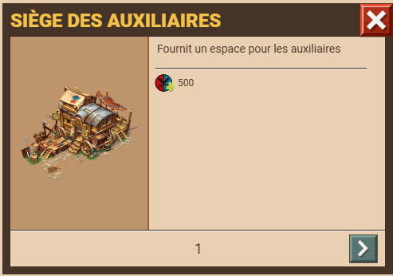
Au début de l'évènement, tous les joueurs peuvent rejoindre le royaume, avec le choix entre 3 camps :
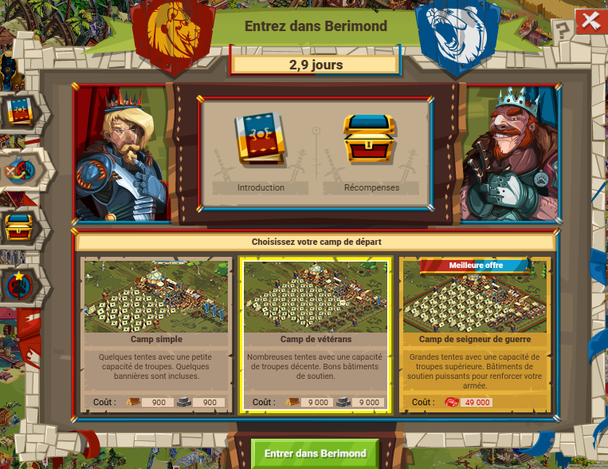
Une fois rejoins, le principe est le suivant : attaquer des tour de guet et monter son camp. Une fois rejions, il y a pas mal de quêtes qui aident à monter le camp, en accordant des ressources. Le fonctionnement du camp (bâtiments surtout) est assez proche de ceux de la côte tranchante, à la différence que le camp de bérimond produit par défaut 845 bois et pierre, plus 1590 bouffe/heure. Une autre différence est qu'il est possible d'envoyer des sos dans Bérimond, mais pas de ressources. Cela signifie que pour monter son camp, il faut piller un max.
Tout au long de cet event, on peut voir le classement des points de vaillance.
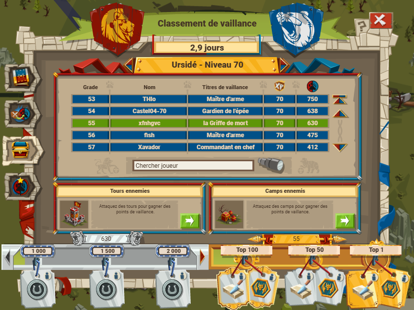
Gagner des points de vaillance est un moyen d'obtenir des titres de vaillance et donc les bonus qui vont avec, et dans le cadre de cet event, gagner des récompenses:
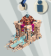
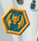
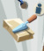
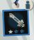
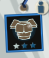
Le principe est le suivant : attaquer les tour de guet, et les piller. Comme précisé plus haut, il faut piller pour monter son camp vu que l'envoi de ressources dans Bérimond n'est pas possible. Pour monter rapidement son camp dans Bérimond, je propose de jouer sur plusieurs facteurs :
Pour monter rapidement son camp, je conseille un comm pillage. Un héro spécifique à Bérimond, avec un bonus e pillage, idem pour les autres équipements (casque, armure, relique, arme). Ajouter un général avec un bonus de pillage (Tizi ou Alyssa avec la capacité trésors cachés).
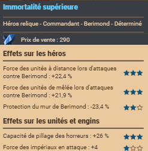
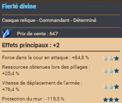
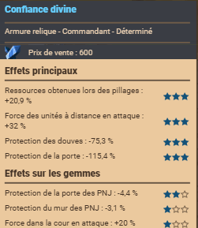
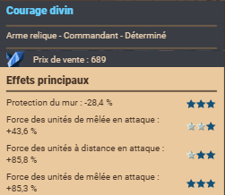
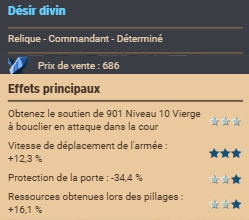
Choisir des soso qui ont une bonne capacité de pillage et une force importante, comme les horreurs, voir horreurs vétérans si possible. Pour s'en procurer, le mieux est d'aller chez le maître-forgeron.
À chaque attaque, il faut réduire un max la protection des def sur les tour de gut, ce qui permet de réduire les pertes et donc accroît la capacité de pillage (+ de soso en vie = + de pillage).
Ce point et à moduler : il faut certe de l'espace pour les soso pour accroître la capacité de pillage, mais il faut aussi penser au bonus de force (déco).
Pour attaquer la capitale et avoir un chance de la détruire, il y a UN facteur sur lequel il faut jouer : les décos (octroient un bonus de force). Pour qui a essayé de spy la capitale, il y a quand même 1 300 000 soso en def et un bailli meilleure que pour les tour de guet.
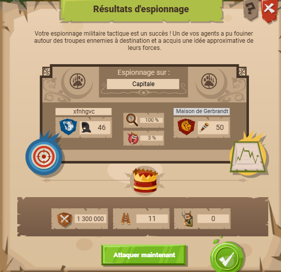
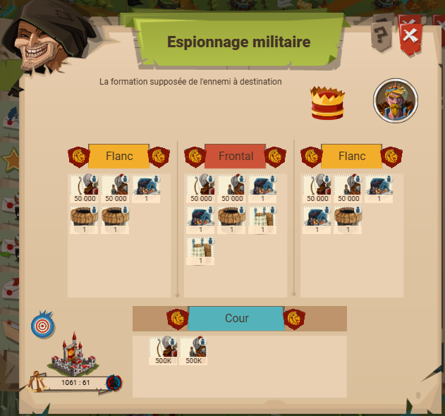
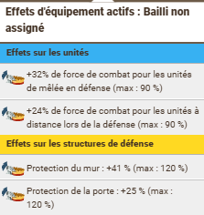
Un autre point est le commandant : pour monter plus vite son camp, un commandant avec un bon bonus de pillage esr recommandé. Pour la capitale, il faut un commandant avec des gros bonus d'attaque, surtout sur les flancs.
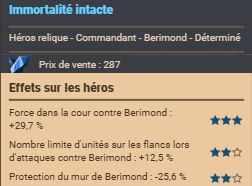
Pour attaquer la capitale, réduire la protection des murs/porte/douves et des def distance. Booster son commandant, répartir les soso en mêlee contre distance et vice-versa. Pour cette raison, il vaut mieux ne pas trop remplir votre camp de tente, même si c'est plus rapide pour monter le camp.